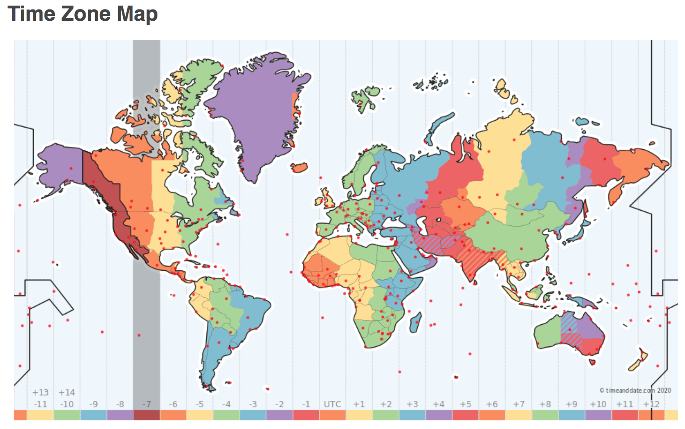

Tools¶
This notebook will guide through the tools you will need for class materials and assignments, and how to get them.
Clicker Question #1¶
How excited are you for COGS 18?
A. Super excited!
B. The most excited!
C. Couldn’t be more excited!
D. I love 8AM classes!
Clicker Question #2¶
What is your current state with regards to datahub?
A. Have not yet tried to access datahub
B. Have tried to access datahub unsuccessfully
C. Have accessed datahub successfully
D. What is this datahub you speak of?
Clicker Question #3¶
Do you have the Anaconda distribution of Python downloaded on your computer?
A. I do!
B. I attempted but was unsuccessful.
C. I have not yet tried.
D. I’m going to use my own Python distribution.
E. I’m going to work to download it in CodingLab.
Prerequisites¶
This course and associated materials do not presume any prior knowledge of Python, or programming in general.
To work with the course materials, you will need make sure you have access to the tools tools described here on datahub.
It will be helpful for the final project if they are also installed on the computer you will be using.
None of the materials are computationally heavy.
What do you need?¶
Access to datahub
Python: Working install of python 3.6 or 3.7 (suggested)
We will be using the Anaconda distribution
Jupyter Notebooks (suggested)

Python¶
Versions: there are different versions of Python.
We will be using 3.6 and/or 3.7
Packages: Python includes a “base set” of code (the standard library), and an extensive ecosystem of third party packages
In this course, we will largely focus on the standard library
For access to other packages when we need them, we will use Anaconda


The Anaconda Ecosystem¶
Anaconda itself is a distribution - that is, a copy of the Python standard library, included a curated collection of external packages.
Conda is a package manager, allowing you to download, install, and manage other packages.

Installation¶
You only need access to datahub for this course, but for working on your projects and for downloading and opening the notebooks used in class, you may want to download anaconda onto your computer, which comes complete with conda, and Jupyter notebooks.
Notes¶
s
If you are on Mac, you have a native installation of Python. This native installation of Python may be older, will not include the extra packages that you will need for this class, and is best left untouched.
Downloading anaconda will install a separate, independent install of Python, leaving your native install untouched.
Windows does not require Python natively and so it is not typically pre-installed.
# You can check which python you are using, and what version it is.
# Once you have installed anaconda, you should see you are using Python in your anaconda folder
# Make sure that the version you have is 3.6 (or at least 3.X)
# Note: these are command-line functions that may not work on windows
!which python
!python --version
JupyterHub¶
Datahub¶
UCSD hosts its version of JupyterHub and calls it datahub. This is what you’ll be using in class.
It is available here: http://datahub.ucsd.edu

When to use Datahub?¶
CodingLabs
Assignments
Course Lecture Slides
Lecture Slides:¶
Once you’ve logged into datahub, paste the following in your browser:
https://datahub.ucsd.edu/hub/user-redirect/git-sync?repo=https://github.com/COGS18/LectureNotes-Sp20
CodingLabs & Assignments:¶
Fetch & complete on datahub
do not change file names
do not copy cells provided
adding cells is allowed!
print()statements encouraged
For Submission:
Before you click submit, make sure it’s the thing you want to submit
You must click submit.
Always check that the CodingLab/Assignment shows up under “submitted assingments”
You can submit as many times as you want
We only have access to your most recent submission
If you submit past the deadline, we will only have access to your late submission
A note about: Timezones¶
Due Dates are in UTC
All deadlines are 11:59 PM PST

TimeZones: https://www.timeanddate.com/time/map/